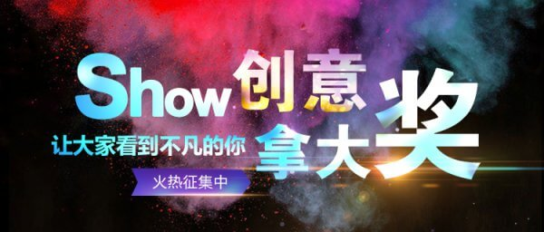

<!--
  This template loads for the 'tab.friend-detail' state (app.js)
  'friend' is a $scope variable created in the FriendsCtrl controller (controllers.js)
  The FriendsCtrl pulls data from the Friends service (service.js)
  The Friends service returns an array of friend data
-->
<ion-view view-title="项目详情">
	<ion-content>
		<div class="detail-special">
			<div class="swiper-container">
				<ul class="swiper-wrapper">
					<li class="swiper-slide">
						
					</li>
					<li class="swiper-slide">
						
					</li>
					<li class="swiper-slide">
						
					</li>					
				</ul>
				<div class="swiper-pagination"></div>		
			</div>


			<div class="detail-special-info pd-lr">
				<div class="border-b1 pd-tb">
					
					<span class="left color-88">Tao.生态科技研究院</span>
					<span class="right color-88">2016/10/01 15:22</span>
				</div>
				
				<div class="font-16 pd-tb">货物DNA完整性校验平台</div>
				
				<div>
					<span class="tag tag-juhuang">现有业务改进</span>
					<span class="tag tag-lan">海创空间</span>
				</div>
				
				<p class="color-88">提供特质提供特质提供特质提供特质提供特质提供特质提供特质提供特质提供特质提供特质提供特质提供特质提供特质提供特质提供特质提供特质。</p>
			</div>
			
			<div class="pd-t10 tab bg-fb">
				<ul class="tab-nav">
					<li class="active">提案介绍</li>
					<li>市场分析</li>
					<li>商业模式</li>
					<li>资源需求</li>
				</ul>
				<div class="tab-list pd-lr">
					<li>
						<p class="mg-b0">我想做什么</p>
						<p class="color-88">用新的技术用新的技术用新的技术用新的技术</p>
						<p class="mg-b0">我想做什么</p>
						<p class="color-88">用新的技术用新的技术用新的技术用新的技术</p>
						<p class="mg-b0">我想做什么</p>
						<p class="color-88">用新的技术用新的技术用新的技术用新的技术</p>
					</li>
					<li></li>
					<li></li>
					<li></li>
				</div>
			</div>
		</div>
	</ion-content>
</ion-view>
